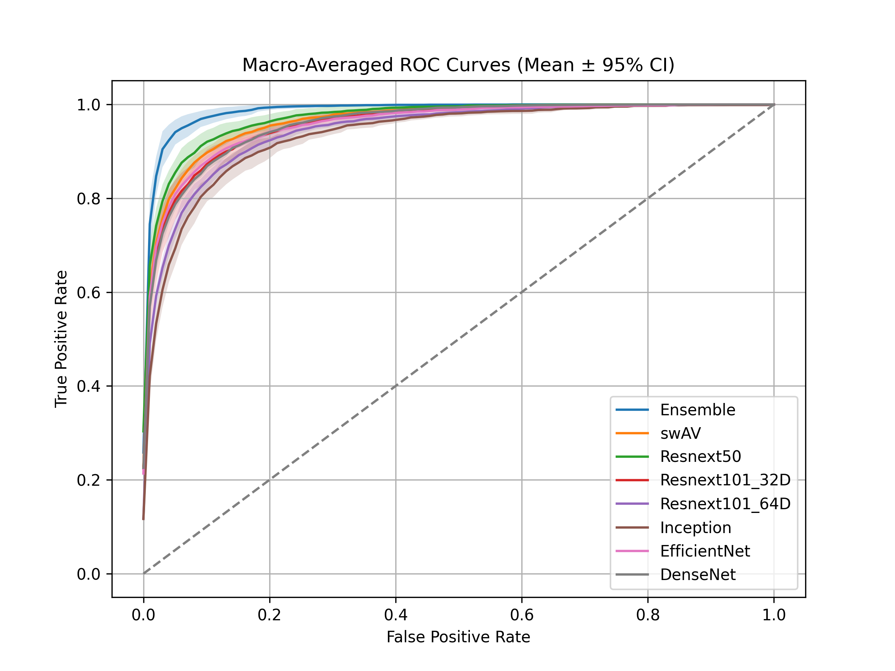
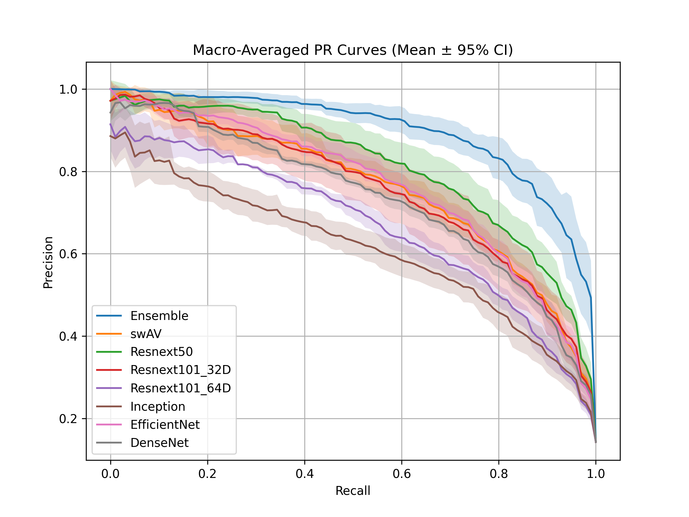

Advancing Skin Lesion Classification with Cross-Validated Ensemble Learning
CSE 4872: Neural Network and Fuzzy System Lab (Spring 2022), extended with stratified five-fold cross-validation
- Evaluated seven deep-learning models and a soft-voting ensemble for seven-class classification using the HAM10000 dataset of 10,015 dermatoscopic images.
- Compared SwAV, Inception-v3, ResNeXt-50, two ResNeXt-101 variants, EfficientNet-B5, and DenseNet-121 using stratified five-fold cross-validation.
- The ensemble achieved the best mean scores across all four reported metrics: accuracy 0.8622, macro-F1 0.7324, ROC-AUC 0.9871, and PR-AUC 0.8955.
- Frameworks/Tools: PyTorch, torchvision, timm, scikit-learn, Matplotlib, Plotly, Weights & Biases, and OpenCV.

